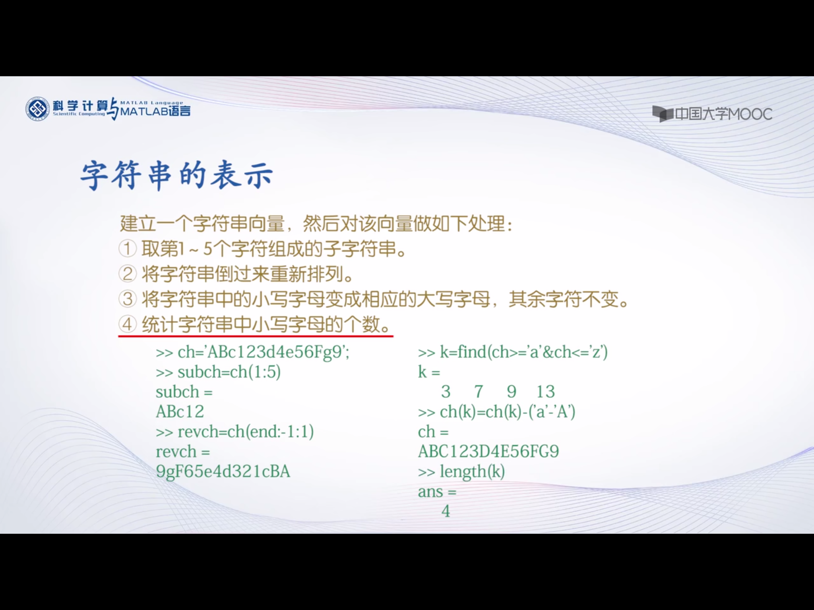

搜索路径
先搜索变量→内部函数→程序文件→先在当前文件夹中搜索→之后在搜索路径文件夹中搜索
这样会导致内部函数优先级低于变量
解决方案：不要将变量名设置为内部函数，例如sin，cos，In等不应设为变量名
设置文件搜索路径
path(path,’e:\work’)或者直接点击菜单栏中的设置路径
数值数据
数值类型:
- 整型:
无符号8位整数数据范围：(0-2^8-1)
带符号8位整数数据范围：(-2^7-2^7-1)
数值类型转换：uint() int() - 浮点型:
单精度 single()
双精度 double() - 复数型
虚数部分用i或者j进行表示
real函数：求复数的实部
imag函数：求复数的虚部数值数据输出格式
format long
format命令只影响输出格式，不影响计算储存函数调用格式
函数名(函数自变量的值)常用函数
- sin(),sind()
- abs() 可以求绝对值，复数的模，字符串的ASCII码值
- round按照四舍五入取整
- ceil 向上取整，取大于等于这个数的第一个整数
- floor 向下取整，取小于等于这个数的第一个整数
- fix 舍去小数取整
- rem(被除数，除数) 求余数
- isprime(n)求素数，n为素数返回1，否则为0
变量及操作
变量名：以字母开头，后接字母，数字下划线，最多63个字符，区分大小写
赋值 变量=表达式 或者 表达式预定义变量
ans是默认赋值变量
i j 虚数单位
pi圆周率
NaN代表非数变量管理
可以直接在工作区进行变量删除修改
who与whos命令可以显示变量
可以保存变量为文件，扩展名为.mat
save 命令：创建内存变量文件
load 命令：装入内存变量文件
例如：save mydata a x 将变量a x装入mydata文件当中
load mydata 装入mydata变量文件矩阵表示
直接输入法建立矩阵
例如A=[1,2,3;4,5,6;7,8,9;]
A = 1 2 34 5 6 7 8 9用建好的矩阵建立更大的矩阵
例如
A=[1,2,3;4,5,6;7,8,9;]
B=[-1,-2,-3;-4,-5,-6;-7,-8,-9;]
C=[A,B;B,A]
矩阵拼接实部矩阵和虚部矩阵构成复数矩阵
例如
B=[1,2,3;4,5,6]
C=[6,7,8;9,10,11]
A=B+i*C
A=
1+6i 2+7i 3+8i
4+9i 5+10i 6+11i向量
格式：e1:e2:e3
其中e1为初始值 e2为歩长 e3为终止值 不写步长默认为1
例如 t = 0：1：5
t = 0 1 2 3 4 5
linspace(a,b,n) a：第一个元素 b最后一个元素 n元素总数
结构矩阵和单元矩阵
结构矩阵
格式:结构矩阵元素.成员名=表达式 (极其弱智的赋值方式，懒得吐槽)
单元矩阵
建立单元矩阵和一般矩阵相似，直接输入即可，只是单元矩阵元素用大括号括起来了
b={10,’liu’,[11,21;34,78];12,’wang’,[34,191;27,578];…}
b=
[10] ‘liu’ [2*2 double]
…
矩阵引用
矩阵可以用下标来进行引用
A(3,2)表示A矩阵第3行第2列的元素。
如果给出的行下标和列下标大于原来的矩阵下标，matlab自己强行扩大为定义的下标，未被定义的元素默认为0
通过序号引用
矩阵元素存储时的序号顺序：一列一列进行存储，一直到最后一列
例如A=[1,2,3;4,5,6]
A(3)
ans=2
下标序号互换
矩阵元素的下标和序号可以通用sub2ind和ind2sub进行互换
sub2ind：将矩阵中指定元素的行，列下标转换成储存的序号。调用格式为：
D=sub2ind(S,I,J) S：行数和列数 I 转换矩阵元素的行下标 J转换矩阵元素的列下标
例如：A =[1:3;4:6]
A =
1 2 3
4 5 6
D = sub2ind(size(A),[1,2;2,2],[1,1;3,2])
D =
1 2
6 4
ind2sub:将矩阵元素的序号转换成对应的下标，其调用格式为：
[I,J]=ind2sub(S,D) S:行数和列数组成的向量，D：序号，I：行下标，J：列下标
例如：
[I,J]=ind2sub([3,3],[1,3,5])
I =
1 3 2
J =
1 1 2
利用冒号表达式获得子矩阵
A(i,:) 第i行的全部元素
A(:,j) 第J列的全部元素
A(i:i+m,k:k+m) 第i-i+m行内且在第k-k+m列中的所有元素
A(i:i+m:) 第i-i+m行的全部元素
end运算符
end表示某一维的末尾元素下标
例如A(end,:)表示最后一行的所有元素
A([1,4],3:end)表示第一行和第四行中从第三列到最后一列的全部元素
删除矩阵元素
空矩阵 X=[]
例如
A(:,[2,4])=[]表示将全部行当中的第二列和第四列矩阵设置为空,这样会改变行数和列数
A=[1,2,3,0,0;7,0,9,2,6;1,4,-1,1,8]
A =
1 2 3 0 0
7 0 9 2 6
1 4 -1 1 8
A(:,[2,4])=[]
A =
1 3 0
7 9 6
1 -1 8
改变矩阵的形状
reshape(A,m,n)在矩阵总元素不变的前提下，将矩阵A重新排列成m*n的矩阵
这样不会改变元素个数和存储顺序
A(:)将矩阵的每一列元素堆叠起来，成为一个列向量
基本运算
算术运算
基本算术运算
四则运算 由于是矩阵运算，除法有/(右除),\ (左除)
- 加减运算，矩阵同型，标量可以和矩阵运算
- 乘法运算，与线性代数相同
- 乘方运算，A^x，要求A为方阵，x为标量，因为是自乘，所以为方阵
- 点运算 .*,./,.\,.^
.* 两个矩阵对应元素进行乘法
例如 当x=0.1,0.4,0.7,1时，分别求y=sinxcosx的值
x=0.1:0.3:1
y=sin(x).*cos(x)关系运算符
<, <=, >, >=, ==, ~=(不等于)
关系成立，返回1，不成立返回0
如果比较的量是两个同型矩阵，比较的是两个矩阵相同位置的元素，按标量进行比较，返回的结果是一个矩阵，由0和1构成
如果比较的量是一个矩阵和一个标量，将标量与矩阵中的元素逐个比较，返回的结果是一个矩阵，由0和1构成逻辑运算
&(与),|(或),~(非)。当比较两个标量时，与JS，C相同
优先级问题：算术运算，关系运算，逻辑运算，算术运算优先级最高，逻辑运算优先级最低，但是非运算是单目运算，它的优先级比双目运算要高。
例如：
~(9==1)
~9==1ans = 1
需要用括号提高关系运算的优先级ans = 0矩阵逻辑运算
将对矩阵同位置上的元素进行逐个运算，结果是一个同型矩阵，由元素1或0组成。标量与矩阵逻辑运算
将标量与矩阵中每个元素进行运算，最终结果是一个同型矩阵，由元素1或0组成。水仙花数求法
水仙花数是指一个三位数等于他自己的个位数的三次方加十位数的三次方加百位数的三次方
m=100:999;
m1=rem(m,10);
m2=rem(fix(m/10),10);
m3=fix(m/100);
k=find(m==m1.^3+m2.^3+m3.^3)
s=m(k)字符串处理
单引号标注，将字符串当成行向量，每个元素对应一个字符
例如：
xm=’houyuhang chao ji shuai’
xm(1:3)
ans =
hou
字符串的操作
- 格式： eval(s) s为字符串 将s字符串作为matlab命令来执行
例如：
t = pi;
m=’[t,sin(t),cos(t)]’; // 这里m还是一个字符串
y=eval(m) //m本身是一个字符串，但是用eval转换之后变成了matlab能识别的命令，从而成为了行向量
y =
3.1416 0.0000 -1.0000 - 字符串和数值之间的转换
abs 和double函数可以获取字符串对应的ASCLL码值
char函数可以把ASCLL码转换成字符串矩阵
例如
s1 = ‘MATLAB’
a = abs(s1)
a =
77 65 84 76 65 66
char(a+32)
ans =
matlab - 字符串比较
比较方法有两种，利用关系运算符或者字符串比较函数。
关系运算符：两个字符串按ASCLL值进行比较，结果是一个0 和 1组成的数值向量。
字符串比较函数：
strcmp(s1,s2):用来比较字符串s1和s2是否相等，相等返回1，否则为0
strncmp(s1,s2,n):用来比较两个字符串前n个字符是否相等，如果相等返回1，否则返回0
strcmpi(s1,s2):在忽略字母大小前提下，比较字符串s1和s2是否相等，如果相等返回1.否则返回0。
strncmpi(s1,s2,n):在忽略字母大小前提下，比较字符串s1和s2q前n个字符是否相等，如果相等返回1.否则返回0
- 字符串查找和替换
findstr(s1,s2): 返回短字符串在长字符串中开始的位置
strrep(s1,s2,s3): 将字符串s1中的所用子字符串s2替换为字符串s3